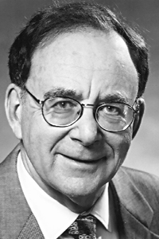

|  |
1985 год Richard M. Karp (1935) «За его продолжительный вклад в теорию алгоритмов, в том числе за разработку эффективных алгоритмов для сетевых потоков и других комбинаторных оптимизационных задач, сопоставление вычислений полиномиальной сложности с интуитивным понятием эффективности, и, самое главное, за вклад в теорию NP-полноты» |
Страна: США
Образование: Доктор философии в области прикладной математики, Гарвардский университет, 1959
О лауреате
После получения докторской степени, Richard Karp 9 лет работал в IBM Watson Research Center. За это время, он провёл фундаментальную работу над моделями параллельных вычислений, которые включают одновременное использование нескольких координированных компьютеров для решения одной проблемы. После он стал работать в Калифорнийском университете в Беркли, где сфокусировался на эвристических алгоритмах для сложных комбинаторных задач, в частности, Задачи коммивояжёра. В 1971 году Karp, совместно с J. Edmonds, разработал алгоритм для нахождения максимального потока в транспортной сети, названный в их честь. Год спустя, в своей статье “Reducibility Among Combinatorial Problems” он расширил концепцию NP-полноты (которую впервые представил S. Cook в 1971 году), привёл список из 21 NP-полной задачи и доказал, что если любую из них можно было бы решить с помощью эффективного алгоритма, то все остальные задачи могли бы быть эффективно решены. Также его работа по NP полноте существенно мотивировала обсуждение знаменитого нерешенного вопроса о P = NP.
Ключевые слова: Edmonds–Karp algorithm, Karp's 21 NP-complete problems
Краткая библиография
| 1. |
M. Held and R. M. Karp, "The traveling-salesman problem and minimum spanning trees," Operations Research, vol. 18, no. 6, pp. 1138-1162, Nov. 1970. В этой статье рассматриваются новые подходы к симметричной проблеме коммивояжера, в которой важную роль играют деревья, являющиеся вариантом остовных деревьев. |
| 2. |
J. Edmonds and R. M. Karp, "Theoretical improvements in algorithmic efficiency for network flow problems," Journal of the ACM, vol. 19, no. 2, pp. 248-264, April 1972. В этой статье представлены новые алгоритмы для задач о максимальном потоке и поиске минимальной стоимости. |
| 3. |
R. M. Karp, "Reducibility among combinatorial problems," in Complexity of Computer Computations: Proceedings of a Symposium on the Complexity of Computer Computations, R. E. Miller and J. W. Thatcher, Eds., The IBM Research Symposia Series, New York, NY: Plenum Press, 1972, pp. 85-103. Эта статья, в которой создана основа для доказательства NP-полных проблем. Также в этой статье был приведён список, состоящий из формулировки и доказательства NP-полноты 21 задачи. |